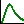
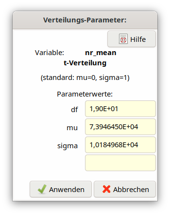

4.11. Spezielle Verteilungen und ihre Eigenschaften¶
In UncertRadio sind folgende Wahrscheinlichkeitsverteilungen implementiert:
distribution |
code |
notes |
|---|---|---|
Normalverteilung Normal |
Normal |
|
Rechteckverteilung Rechteck |
Rectangle |
|
Dreiecksverteilung Dreieck |
Triangle |
|
(N+x) Rule |
(N+x) Rule |
|
Lognormalverteilung LogNormal |
LogNormal |
|
die Gammaverteilung, |
GammaDist |
|
Binomial+Poisson-Verteilung
|
Binom+Poiss
|
|
Betaverteilung, 2
parameters
|
Beta2Dist
|
|
T distribution |
T-Distrib |
|
Betaverteilung, 4
parameters
|
Beta4Dist
|
|
Erlang distribution of the
counting duration for preset
count numbers
|
Npreset
|
is a Gamma
distribution for
integer numbers of
counts
|
Neben den bekannten Verteilungen, wie z.B. Normal-, Rechteck- oder Dreiecksverteilungen, kommen noch spezielle Verteilungen zum Einsatz,
die Gammaverteilung,
die Betaverteilung und
the t-distribution.
deren Eigenschaften nachfolgend beschrieben werden. Diese können zusätzlich zwei bis vier Parameter verwenden.
Im Folgenden werden die Wahrscheinlichkeitsdichtefunktionen (pdf) und der Zusammenhang ihrer Parameter zu Messdaten kurz eingeführt.
Das Icon

erlaubt den Aufruf eines Dialogs zur Anzeige der verteilungsbezogenen Parameter einer Eingangsgröße. Dazu muss die Zeile innerhalb der Tabelle „Values, uncertainties” markiert sein.4.11.1. die Gammaverteilung,¶
Wahrscheinlichkeitsdichte als Funktion von \(x\), mit Parametern \(\alpha\) und \(\beta\) :
\(P_{\gamma}\left( x|\alpha,\beta \right) = \frac{\beta^{\alpha}}{\Gamma(\alpha)}x^{\alpha - 1}e^{- \beta x}\)
\(\Gamma(x)\) is the gamma function, with \(\Gamma(x + 1) = x!.\)
Mittelwert \(E\lbrack x\rbrack\) und Varianz \(Var\lbrack x\rbrack\) der Wahrscheinlichkeitsdichte sind wie folgt definiert:
\(E\lbrack x\rbrack = \frac{\alpha}{\beta}\) ; \(Var\lbrack x\rbrack = \frac{\alpha}{\beta^{2}}\)
Ordnet man diesen den Mittelwert und die Varianz von Messwerten zu, können in Umkehrung der Gleichungen die beiden Parameter berechnet werden:
\(\beta = \frac{E\lbrack x\rbrack}{Var\lbrack x\rbrack}\) \(\alpha = \frac{\left( E\lbrack x\rbrack \right)^{2}}{Var\lbrack x\rbrack}\)
Die Gammaverteilung wird u.a. für Zählraten oder für eine Nachweiswahrscheinlichkeit mit größerer relativer Unsicherheit verwendet.
4.11.2. die Betaverteilung und¶
Wahrscheinlichkeitsdichte als Funktion von \(x\), mit Parametern \(\alpha\) und \(\beta\) :
\(P_{\beta}\left( x|\alpha,\beta \right) = \frac{1}{B(\alpha,\beta)}x^{\alpha - 1}(1 - x)^{\beta - 1}\)
\(B(\alpha,\beta) = \Gamma(\alpha)\Gamma(\beta)/\Gamma(\alpha + \beta)\) is the beta function.
Mittelwert \(E\lbrack x\rbrack\) und Varianz \(Var\lbrack x\rbrack\) der Wahrscheinlichkeitsdichte sind wie folgt definiert:
\(E\lbrack x\rbrack = \frac{\alpha}{\alpha + \beta}\) ; \(Var\lbrack x\rbrack = \frac{\alpha\beta}{(\alpha + \beta)^{2}(\alpha + \beta + 1)}\)
Ordnet man diesen den Mittelwert und die Varianz von Messwerten zu, können in Umkehrung der Gleichungen die beiden Parameter berechnet werden:
\(\beta = \alpha\left( \frac{1}{E\lbrack x\rbrack} - 1 \right);\) \(\alpha = E\lbrack x\rbrack\left( \frac{E\lbrack x\rbrack\left( 1 - E\lbrack x\rbrack \right)}{Var\lbrack x\rbrack} - 1 \right)\)
oder (nach NIST):
\(\beta = \frac{\alpha}{\bar{x}}\left( 1 - \bar{x} \right);\) \(\alpha = \bar{x}\left( \frac{\bar{x}(1 - \bar{x})}{s^{2}} - 1 \right)\)
Die Betaverteilung ist im Gegensatz zur Gammaverteilung nur im Bereich \(0 \leq x \leq 1\) definiert. Sie ist damit z.B. für eine Nachweiswahrscheinlichkeit mit dem gleichen möglichen Wertebereich gut geeignet.
4.11.3. The t-distribution¶
Es wird nicht die einfachere Student-t-Verteilung sondern die „nicht-standard” t-Verteilung benutzt, die im englischen auch als „Scaled-and-shifted t-distribution bezeichnet wird. Sie besitzt als Parameter die Anzahl \(\upsilon\) der Freiheitsgrade und zwei Parameter \(\widehat{\mu}\) („Verschiebung”) und \({\widehat{\sigma}}^{2}\) („Skalierung”).
Die Wahrscheinlichkeitsdichte:
Üblich ist dafür auch folgende Schreibweise \(P_{\upsilon}(\widehat{\mu},{\widehat{\sigma}}^{2})\).
Mittelwert \(E\lbrack x\rbrack\) und Varianz \(Var\lbrack x\rbrack\) der Wahrscheinlichkeitsdichte sind wie folgt definiert:
\(E\lbrack x\rbrack = \widehat{\mu}\); \(\upsilon > 1\)
\({Var}\lbrack x\rbrack = {\widehat{\sigma}}^{2}\frac{\upsilon}{\upsilon - 2}\) ; \(\upsilon > 2\)
Zur Ableitung der den Parametern zugeordneten Werte sei angenommen, dass eine Serie wiederholter Messungen \(x_{1},x_{2},\ldots,x_{n}\) gaußverteilter Werte gegeben ist, wobei \(\widehat{\mu}\) und \({\widehat{\sigma}}^{2}\) als unbekannt betrachtet werden. Dies führt zur Wahrscheinlichkeitsdichte der Eingangsgröße \(X\), gegeben durch die \(t\)-Verteilung der Form
\(P_{\upsilon}(\overline{x},\frac{s^{2}}{n})\)
mit folgenden Parameterwerten (Mittelwert, Varianz, \(\nu = n - 1\)):
Die oben angeführten Erwartungswerte führen zu folgenden Werten:
\(E\lbrack x\rbrack = \overline{x}\)
\({Var}\lbrack x\rbrack = \frac{s^{2}}{n}\frac{\upsilon}{\upsilon - 2} = \frac{s^{2}}{n}\frac{n - 1}{n - 3}\);
In diesem Fall werden \(\overline{x}\) und \(\frac{s^{2}}{n}\) als die durch Messungen erhaltenen Eingangswerte der t-Verteilung betrachtet, während der Faktor \((n - 1)/(n - 3)\) aus einer Eigenschaft der t-Verteilung folgt.
Da sich die t-Verteilung auf eine Messreihe bezieht, muss die betreffende Eingangsgröße in UncertRadio als Mittelwertgröße deklariert werden (siehe Anwendung von Mittelwerten). Damit sind im Programm die Parameterwerte \(n\), bzw. \(\upsilon = df = n - 1\), und \(\ mu = \overline{x},\ \ sigma = \ s\) bekannt; sie können über den folgenden, durch das Toolbar-Icon aufgerufenen Dialog angezeigt werden:

Zufallswerte \(t_{k}\) dieser Verteilungsdichte werden mittels \(t_{k} = \overline{x} + \frac{s^{2}}{n}t_{0k}\) gewonnen, wobei die \(t_{0k}\) Zufallswerte der Standard-t-Verteilung sind, die mit einem Zufallszahlengenerator erzeugt werden. In der genannten Formel für \(t_{k}\) darf der Faktor \((n - 1)/(n - 3)\) nicht enthalten sein; er ergibt sich allein aus der Verwendung der \(t_{0k}\)-Werte.
4.11.4. Erzeugung von Zufallszahlen¶
Zur Erzeugung von gamma-verteilten Zufallswerten wird ein Generator von Marsaglia and Wang (2000) und ein Generator aus Alan Millers Sammlung von Fortran-90-Routinen ( <https://jblevins.org/mirror/amiller/> ) verwendet. Für die beiden anderen Verteilungen werden ebenfalls Routinen aus Alan Millers Sammlung verwendet.